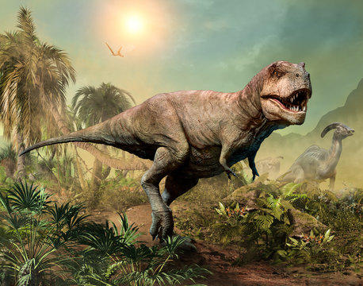
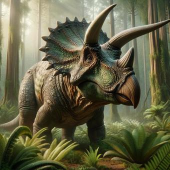

Tyranozaur Rex - król dinozaurów
T. rex to jeden z największych drapieżników, jaki kiedykolwiek żył. Miał około 12 metrów długości, potężne szczęki i zęby wielkości banana. Choć jego ręce były małe, był bardzo silny i budził postrach wśród innych dinozaurów. Żył około 66 milionów lat temu i do dziś jest ikoną prehistorii.

Pterodaktyl to latający gad, który żył około 150 milionów lat temu. Choć często mylony z dinozaurami, należał do pterozaurów. Miał rozpiętość skrzydeł do 1,5 metra i poruszał się zarówno w powietrzu, jak i na ziemi. Był szybki i zwinny – prawdziwy mistrz przestworzy prehistorii!

Triceratops to roślinożerny dinozaur żyjący ok. 66 mln lat temu. Miał trzy rogi, dużą kołnierzowatą czaszkę i masywną budowę ciała. Dorastał do 9 metrów długości i ważył tyle co kilka słoni! Swoimi rogami mógł skutecznie bronić się przed drapieżnikami, takimi jak T. rex.